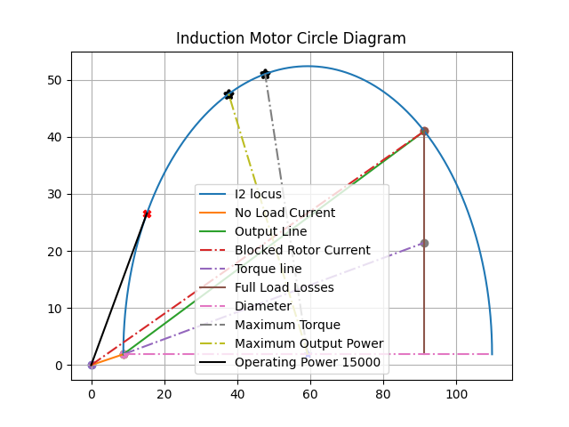

electricpy.visu.InductionMotorCircle¶
- class electricpy.visu.InductionMotorCircle(no_load_data, blocked_rotor_data, output_power, torque_ration=1, frequency=50, poles=4)[source]¶
Plot Induction Motor Circle Diagram.
This class is designed to plot induction motor circle diagram and plot circle diagram to obtain various parameters of induction motor.
Examples
>>> from electricpy.visu import InductionMotorCircle >>> open_circuit_test_data = {'V0': 400, 'I0': 9, 'W0': 1310} >>> blocked_rotor_test_data = {'Vsc': 200, 'Isc': 50, 'Wsc': 7100} >>> ratio = 1 # stator copper loss/ rotor copper loss >>> output_power = 15000 >>> InductionMotorCircle( ... no_load_data=open_circuit_test_data, ... blocked_rotor_data=blocked_rotor_test_data, ... output_power=output_power, ... torque_ration=ratio, ... frequency=50, ... poles=4 ... )
- Parameters
no_load_data (dict {'V0', 'I0', 'W0'}) – V0: no load test voltage I0: no load current in rotor W0: No load power(in Watts)
blocked_rotor_data (dict {'Vsc','Isc','Wsc'}) – Vsc: blocked rotor terminal voltage Isc: blocked rotor current in rotor Wsc: Power consumed in blocked rotor test
output_power (int) – Desired power output from the induction motor
torque_ration (float) – Ration between rotor resitance to stator resistance (i.e., R2/R1)
frequency (int) – AC supply frequency
poles (int) – Pole count of induction Motor
- __init__(no_load_data, blocked_rotor_data, output_power, torque_ration=1, frequency=50, poles=4)[source]¶
Primary Entrypoint.
Methods
__init__(no_load_data, blocked_rotor_data, ...)Primary Entrypoint.
compute_circle_params()Compute the parameters of induction motor circle.
compute_efficiency()Compute the output efficiency of induction motor.
compute_slope(line)Compute slope of the line.
get_output_power()Determine induction motor circle desired output power point.
get_torque_line()Obtain the torque line of the induction motor.
get_torque_max()Compute max torque for given Induction Motor parameters.
plot()Plot the Induction Motor Circle Diagram.